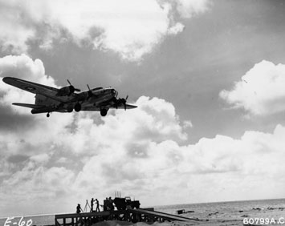

Operation Aphrodite

Operation Crossbow was the World War II code names of United States Army Air Forces and United States Navy operations to use B-17 and PB4Y bombers as precision-guided munitions against bunkers and other hardened/reinforced enemy facilities, such as those targeted during Operation Crossbow. The plan called for B-17 aircraft that had been taken out of operational service:
Various nicknames existed such as "robot", "baby", "drone" or "weary Willy"
To be loaded to capacity with explosives, and flown by radio control into bomb-resistant fortifications such as German U-boat pens and V-weapon sites.
Check this
guy podcasts really informative guy
| The United States government had drone tech capablities since way back in World War 2. Thats insane!!!
|
blah blah blah blah blah blah
| Months |
Season |
Purpose |
Dec–Feb |
Winter |
Frozen water |
Mar–May |
Spring |
Flowers Blooming |
June–Aug |
Summer |
Death by Water |
Sept–Nov |
Fall |
Dying Trees |
| My List of Favorite Movies |
The Year it Came out |
| Eternial Sunshine of the Spotless Mind |
2004 |
Pulp Ficiton |
1994 |